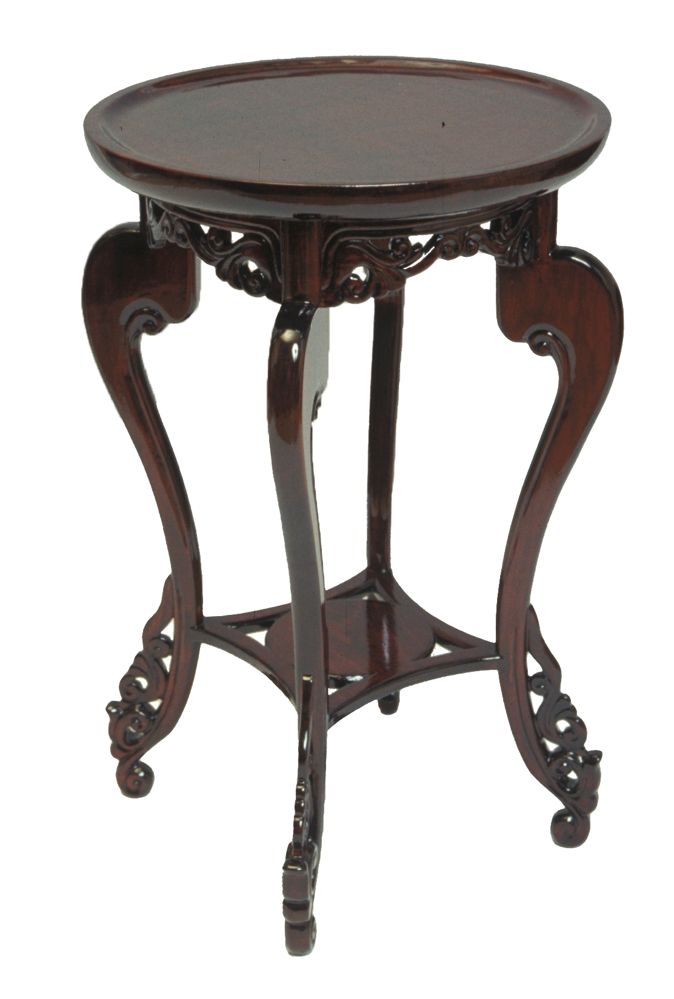

소목장
건물의 창호, 목기, 목가구(장롱·궤·경대·책상·문갑 등)를 제작하는 기능

제작과정
장롱은 재료에 따라 귀목장롱·솔장롱·오동장롱이 있고 칠을 안한 백골 장롱, 칠을 한 칠장롱, 무늬가 없는 민장롱, 들기름을 먹인 종이를 바른 발림장롱으로 분류된다.
사용재료
각각의 지역적 여건에 따라 재료의 사용과 형태, 장식 방법 등을 달리하였다.
특징
소목장의 기능은 무늬가 있는 나무를 사용하여 자연스러운 미를 최대한 살려내는 전통 목공예기법으로 민속공예사적 가치가 있다. 즐겨 사용하는 무늬는 삼호장·성티무늬·뇌문(번개무늬)·겹귀무늬·홑귀무늬 등이 있고 제작도구로는 톱 종류와 대패·등밀이·장도리·송곳·놋줄 등이 사용된다.
전승자
| 보유구분 | 이름 | 성별 | 기예능 | 지역 | 인정일 |
|---|---|---|---|---|---|
| 보유자 | 박명배(朴明培) | 남 | 소목 | 전남 | 2010-04-22 |
| 보유자 | 소병진(蘇秉辰) | 남 | 소목 | 전북 | 2014-09-16 |
| 보유자 | 엄태조(嚴泰祚) | 남 | 소목 | 대구 | 2014-09-16 |
| 전승교육사 | 김금철(金今哲) | 남 | 소목 | 경남 | 1982-04-01 |
| 전승교육사 | 조화신(趙化信) | 남 | 소목 | 경기 | 1996-02-01 |
소재지
기타